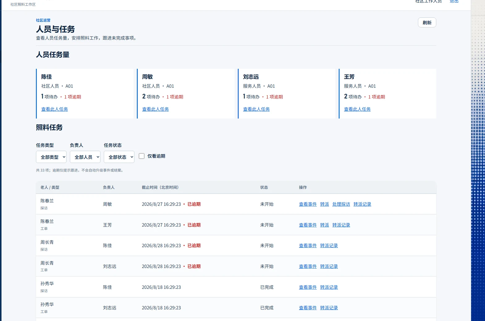
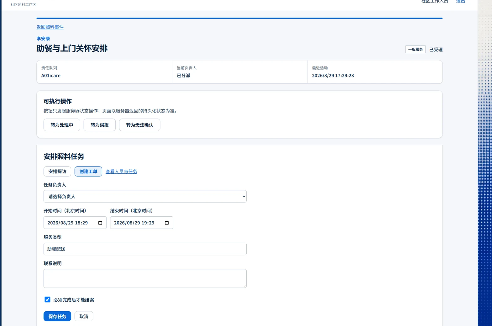
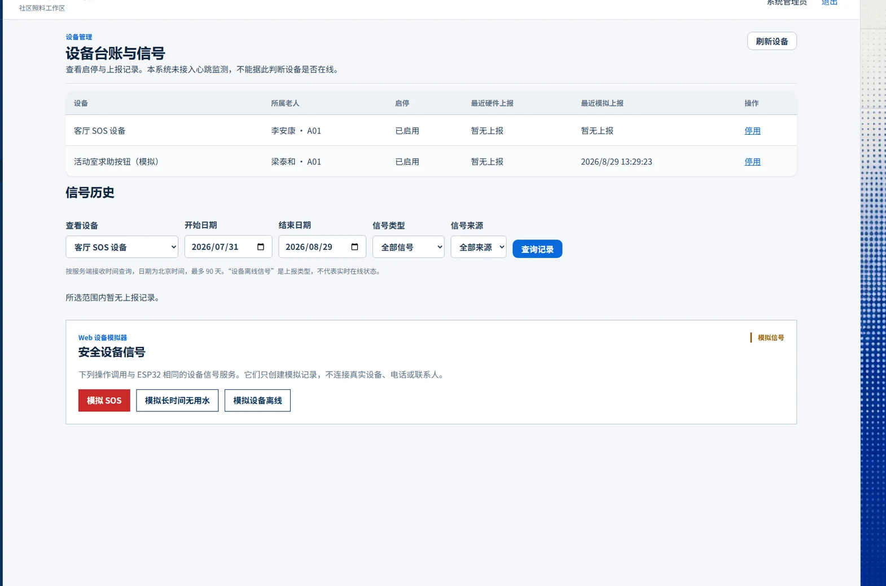
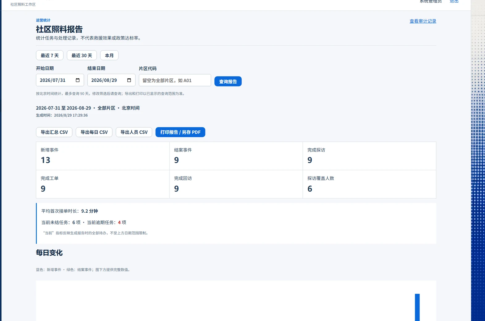
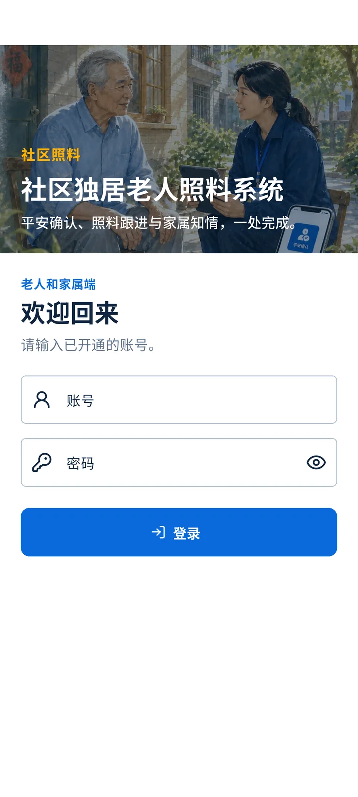
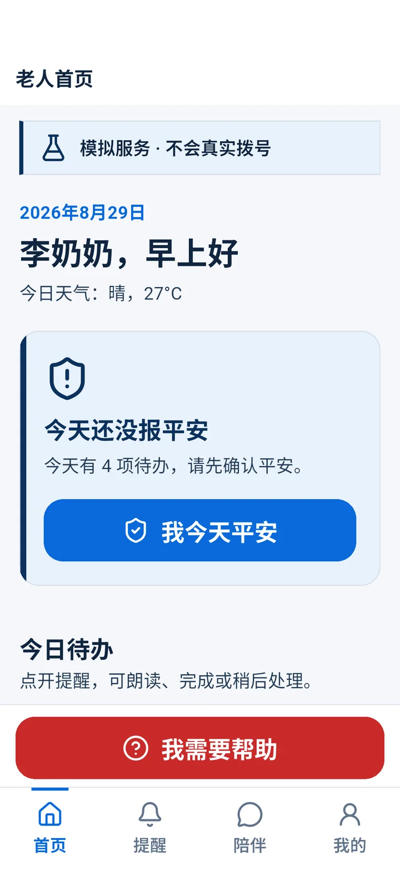
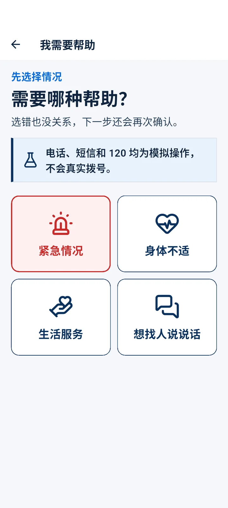
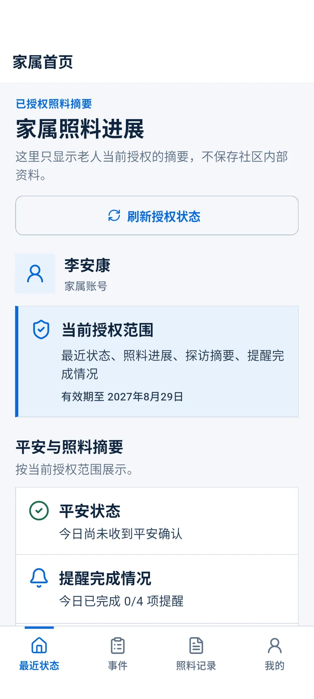

项目开发
全流程记录
从方案确认到运营扩展和移动端改版，按日期记录设计、开发、测试、排错与版本变化。
这份记录写到哪一天
本册依据仓库文件、测试输出、Git 提交、CI 运行和真实页面截图整理。能回读的结果写明数字；没有做过的实物测试直接标成“未验收”。
资料怎么核对
设计规格、实施计划、验收记录、彩排回执、运营说明和测试源码。
.NET、Web、Flutter、Android 集成、APK、PlatformIO 和 API 主流程。
提交日期、精确 SHA、远端回读和 GitHub Actions 运行号。
三条说明
老人档案、电话、地址、风险标签、服务记录和统计均由固定种子生成。
系统不会真实拨号、发短信、联系 120 或派出线下人员。
参赛版没有经过真实社区部署、医疗器械认证或生产数据合规验收。
每天完成了什么
确认 1 人 + Codex、10 周计划和技术栈；当天落下 18 个提交，完成档案、事件、任务、移动端、设备模拟和验收脚本的主体。
逐步彩排 5 分 16 秒；修正本地化断言，并为旧运行时目录升级增加安全复制和耗时上限。
补充登录与空状态插图，处理 360px 宽度下登录区被撑开的 CSS Grid 问题；Web 35 项测试通过。
加入任务转派、设备启停、信号筛选、CSV 和打印。当天验证 .NET 136 项、Web 38 项；浏览器 7 条只完成发现和类型检查。
只修正照料人员手中平板方向，保留其他人物和场景，提交为 28a88c3。
完成老人端、家属端导航和适老化调整，在 Android 模拟器接入本地 API 截取 10 张真实页面；管理端侧栏重复说明同时删除。
为什么选择社区照料流程
最初比较了三条路线。最后把社区工作人员的受理、探访、派单和回访放在主流程，老人 App、家属端、设备和 AI 只作为入口或辅助。
老人超级 App
功能容易展示，但把操作压力留给老人，社区线下处理仍然分散。
设备监测平台
硬件画面直观，但设备断线或误报会拖住整个演示，也容易把信号说成事故。
社区照料系统
用同一事件串起确认、派单、执行和回访；硬件和 AI 失效时仍可人工继续。
v1 明确做什么
v1 不承诺什么
| 范围 | 本版处理方式 |
|---|---|
| 医疗判断 | 只做提醒、记录和转介，不诊断、不改药、不代替医生。 |
| 真实救援 | 电话、短信、120 和上门全部保存为模拟记录。 |
| 设备结论 | 信号先进入人工确认，不把离线、用水异常直接认定为事故。 |
| 生产部署 | 参赛版只用合成数据，不声称已满足真实运营的全部要求。 |
一条事件，五类角色
| 角色 | 入口 | 能做的事 | 看不到的内容 |
|---|---|---|---|
| 老人 | Flutter | 签到、求助、提醒、陪伴、授权 | 社区内部记录、他人档案 |
| 家属 | Flutter | 查看授权摘要、事件和照料进展 | 未授权健康字段、内部探访记录 |
| 社区人员 | Vue Web | 受理、派单、探访、回访、结案 | 非负责片区业务 |
| 服务人员 | Vue Web | 处理数据库当前分给自己的工单 | 无任务老人的档案和健康信息 |
| 管理员 | Vue Web | 看设备、报告、审计和系统设置 | 不能代替工作人员处理事件 |
技术结构
Flutter Android，同一 APK 按角色进入老人端或家属端。
Vue 负责社区工作台、人员任务、设备和报告。
ASP.NET Core 10 + SQLite，统一 JWT、权限、审计和并发版本。
ESP32 与 Web 模拟器共用上报接口；没有实物时只演示模拟路径。
仅生成陪伴草稿和安全提示；服务不可用时回到固定提示，不影响签到和派单。
第一天完成可运行主体
08 月 24 日先提交书面规格和实施计划，再按数据、权限、事件、任务、客户端、设备、运维和验收依次实现。当天共有 18 个提交。
设计规格：服务对象、角色、流程、数据和不做范围。
实施计划：按测试、模块和演示流程拆分任务。
工程基础：API、Web、Flutter、固件、脚本和测试目录。
合成档案、角色授权、签到、提醒、事件、探访和工单。
社区档案工作区和事件操作页面。
老人端、家属端、离线队列、求助与授权页面。
AI 草稿确认、SOS 设备和 Web 模拟器。
审计、重置、启动脚本、自动门禁和验收资料。
按讲稿操作，5 分 16 秒结案
| 步骤 | 操作 | 回读结果 |
|---|---|---|
| 重置 | 加载固定种子资料 | 恢复 20 份合成档案。 |
| 发现 | 漏签后注入“长时间无用水” | 信号并入同一事件，没有重复建单。 |
| 受理 | 社区人员接单并创建探访 | 事件从待确认进入已受理、处理中。 |
| 执行 | 开始并完成探访 | 内部记录和家属可见摘要分开保存。 |
| 联系 | 模拟家属电话和模拟急救转运 | 各保存 1 条“模拟送达”记录。 |
| 结案 | 解决事件，完成回访 | 满足强制任务条件后结案。 |
结案后报告页回读
档案
未结事件
完成探访
模拟通知 + 设备信号
这次结果来自 Web 模拟器和合成资料，不代表实物设备、真实拨号或救援响应已经通过。
每次扩展都重新跑门禁
测试数增加来自新功能和回归用例。不同日期的口径不同，因此按当日记录分别呈现，不把几次结果相加。
| 日期 | .NET | Web | 移动端 | 其他 |
|---|---|---|---|---|
| 08.25 | 60 单元 + 53 集成 | 28 组件；浏览器 5 条 | Android 集成 12；analyze 通过 | ESP32 编译；演示包 71 条摘要 |
| 08.26 | 沿用主体回归 | 35 项；类型检查和构建通过 | 未改移动端 | 360px 登录布局复测 |
| 08.27 | 66 单元 + 70 集成 | 38 项 | 本轮未执行 | 浏览器 7 条只发现和类型检查 |
| 08.29 | 136 项 | 38 项 | Android 集成 14；Flutter 7 | APK、PlatformIO、API 主流程 |
如何避免把“检查过”写成“通过”
命令完成、退出码为 0，并且结果与预期断言一致。
只有用例发现、类型检查、构建产物，或环境不允许启动真实服务。
问题、原因和处理结果
| 问题 | 查到的原因 | 处理 |
|---|---|---|
| 旧运行时目录升级可能破坏现有环境 | 复制过程缺少安全检查，目录大时耗时不可控 | 2b9b9cb 增加安全复制；8c8617c 增加耗时上限。 |
| 探访测试失败 | 界面已本地化，断言仍查英文状态 | a7cf85a 改成页面实际中文状态。 |
| 手机宽度登录页出现约 70px 空白 | CSS Grid 隐式行被内容撑开 | 固定为 220px auto，再测 360px 页面。 |
| Windows 清理测试目录失败 | 路径过长 | 只清理已核对的测试目标，不扩大删除范围。 |
| 老人端 200% 字号时底栏溢出 6dp | 导航高度增量不足 | 字号高度系数由 32 调到 48，并补响应式测试。 |
| 签到语义状态更新慢 | AnimatedSwitcher 仍保留旧节点 | 等待状态切换完成后再断言。 |
| 家属设置页触发 Material 断言 | 页面结构与组件上下文不匹配 | 调整页面容器，重新跑集成测试。 |
| 路由截图短暂出现灰屏 | 转场动画尚未结束 | pumpAndSettle 后再等 250ms。 |
| 管理端侧栏重复说明 | 页面数据已经能表达设备状态 | 删除两行说明，针对布局测试 5 项和 Web 38 项通过。 |
人员和任务放到同一页

真实管理端截图，已裁去侧栏，只保留人员负载、筛选和任务表格；截图数据为运营演示场景。
社区人员只能处理负责片区，管理员只查看。
必须填写原因，并提交当前并发版本。
转派后原人员失去操作权，新人员无需重新登录。

并发处理
转派、开始和完成共用数据库维护的版本号。两个人同时操作旧版本时，只允许一个成功，另一个返回 409。
审计内容
保存原负责人、新负责人、操作人、原因和时间；不改变事件负责人、预约时间和强制任务属性。
设备留历史，报告写清口径

设备台账：启停状态、最近上报和历史筛选。

运营报告：日期范围、汇总、趋势、人员表和导出。
设备规则
停用时必须写原因；硬件和模拟上报都会被拒绝。
历史信号和关联事件继续保留；重新启用后恢复上报。
只显示“已启用／已停用”和上报记录，不推断实时在线。
报告规则
默认最近 30 天，可选 7 天、本月或自选，最长 90 天。
日期按北京时间；事件按创建或结案时间，任务按完成时间。
CSV 防公式注入，不含健康资料、电话和内部探访记录。
登录和老人首页更直接


登录页
使用本地照料场景，不放演示账号和密码；增加密码显示切换和明确的错误提示。
老人首页
按日期问候、平安状态和今日提醒排列；签到是唯一蓝色主操作，求助入口固定在导航上方。
紧急操作保留确认，授权撤回立即生效


两列大按钮；紧急项保持红色和二次确认，同一请求可离线重试。
只组合后端已有授权字段，不编造健康评分或照料统计。
显示来源、级别、处理状态和时间线，隐藏内部记录。
从小屏到 200% 字号都单独检查
| 检查项 | 结果 | 说明 |
|---|---|---|
| 屏幕尺寸 | 通过 | 360×800、412×915、800×1280。 |
| 字号 | 通过 | 应用 1.0、1.3、1.6；系统 200% 缩放。 |
| 导航 | 通过 | 老人端和家属端四标签、状态保持、深链和角色拦截。 |
| 关键流程 | 通过 | 签到、求助确认、离线重试、AI 草稿确认、撤回授权、家属幂等上报。 |
| 减少动态效果 | 通过 | 系统启用减少动态效果后关闭过渡动画。 |
| 物理 Android 手机 | 未验收 | 本轮只有模拟器，不能替代真机安装、局域网和大字体操作。 |
213,079,271 bytes
SHA-256
1B266E3322177EC3E22B022C82A30903
FEBA05F84E52C4FB5476833D5937F796
PlatformIO 6.1.19；RAM 14.3%，Flash 67.1%；API 主故事 1/1。
这些结果不等于 ESP32 实物烧录通过。
提交、推送和 CI 分开核对
本册把本机测试、Git 推送和远端 CI 当作三件事。只有本机与远端 SHA 一致，才能说明这次提交确实推到了目标分支。
| 提交 | 内容 | 远端回读 |
|---|---|---|
| 9c4540a | 管理端手机登录间距修复 | GitHub Actions 32968421680 |
| 7c01926 | 人员任务、设备和报告扩展 | GitHub Actions 33066841773 |
| 28a88c3 | 封面海报和平板方向修正 | GitHub Actions 33166053313 |
08.29 移动端改版、侧栏文字删除和本册 PDF 尚未提交，因此没有新的远端 SHA 或 CI 结果。本册不会把本机通过写成远端通过。
不虚构多人团队和会议
项目由 1 人负责产品、设计、开发、演示和验收，Codex 协助调研、实现、测试与材料整理。没有正式的多人团队会议，因此这里记录的是每次需求确认形成的决定。
实际分工
| 参与者 | 工作 |
|---|---|
| 项目负责人 | 确定方向、确认范围、检查界面、决定版本提交与验收取舍。 |
| Codex | 协助资料研究、代码实现、自动测试、问题定位、截图和交付文档。 |
AI 协作不能代替负责人对需求、数据、实物演示和最终陈述的核对。
按日期整理的决定
| 08.24 | 选社区照料流程；只用合成数据；外部动作必须标“模拟”。 |
| 08.25 | 实物 Android 和 ESP32 暂不验收，不能借模拟器结果代替。 |
| 08.27 | 补人员派单、设备台账和报告；管理员继续只看不代办。 |
| 08.28 | 封面只修平板方向，不改变人物、环境和构图。 |
| 08.29 | 移动端改成四标签；适老字号取系统设置和应用设置中的较大值。 |
| 08.29 | 设备数据已经直观，删除管理端侧栏重复说明。 |
哪些已通过，哪些还没有
| 范围 | 状态 | 当前依据 |
|---|---|---|
| 服务端自动测试 | 通过 | .NET 136 项。 |
| 管理端测试与构建 | 通过 | Web 38 项；类型检查和生产构建通过。 |
| 移动端自动测试 | 通过 | Android 集成 14、Flutter 7、analyze 无问题、Debug APK 成功。 |
| 移动端真实页面 | 通过 | Android 模拟器连接本地 API，保存 10 张页面截图。 |
| ESP32 固件编译 | 通过 | PlatformIO 6.1.19；RAM 14.3%，Flash 67.1%。 |
| 主故事 API | 通过 | 1/1；固定种子可重复。 |
| 物理 Android 手机 | 未验收 | 没有真机安装、局域网、离线求助和 200% 字号操作记录。 |
| ESP32 实物 | 未验收 | 没有烧录、按钮、重复信号、断线重连和同事件回读。 |
| 75 岁以上目标用户试用 | 未验收 | 尚无真实用户任务完成率、误触和访谈记录。 |
| 真实社区部署与合规 | 未验收 | 参赛版使用合成数据，没有生产运营和监管验收。 |
使用独立演示库运行 Web 主流程；硬件不可用时明确切换到 Web 设备模拟器。
不能说系统已经真实报警、联系 120、完成医疗判断或达到正式社区服务标准。
证据文件在哪里
- docs/superpowers/specs/
2026-08-24-...-design.md
书面设计规格与调研结论。 - docs/superpowers/plans/
2026-08-24-...md
实施顺序、测试和验收步骤。 - docs/demo/acceptance-report.md
08.25 自动门禁和未完成项目。 - docs/demo/rehearsal-receipt.md
5 分 16 秒彩排过程和数据回读。 - docs/demo/community-operations.md
人员、设备、报告口径与 08.27 复验。
- docs/demo/product-intro-ppt/images/
管理端真实页面截图。 - apps/mobile/integration_test/
导航、适老、签到、求助和授权测试。 - apps/admin-web/src/pages/__tests__/
管理端组件和布局测试。 - git log / git ls-remote
提交日期、本地与远端 SHA。 - GitHub Actions
已推送版本的远端运行记录。